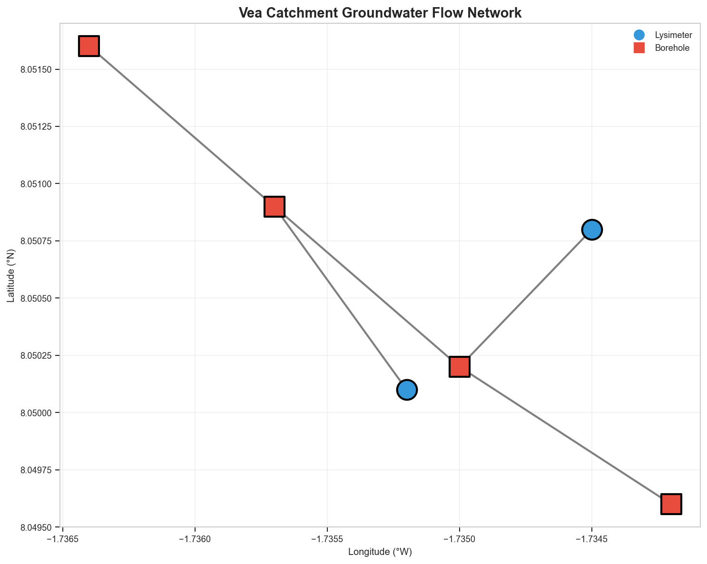
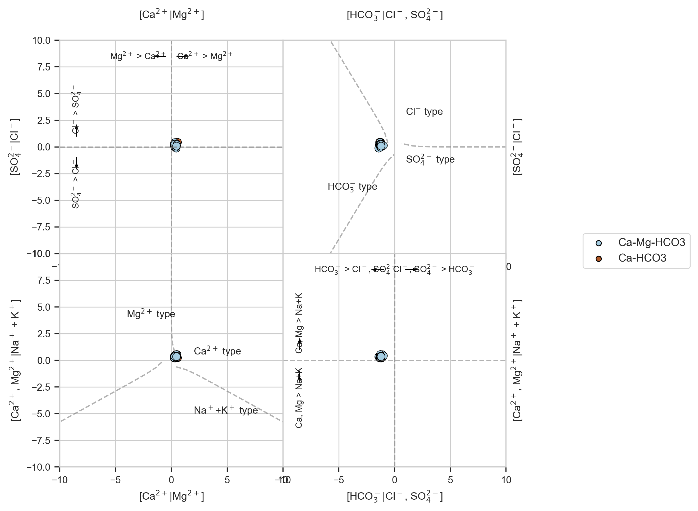
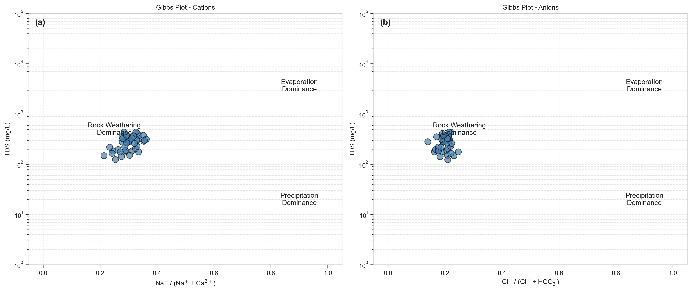
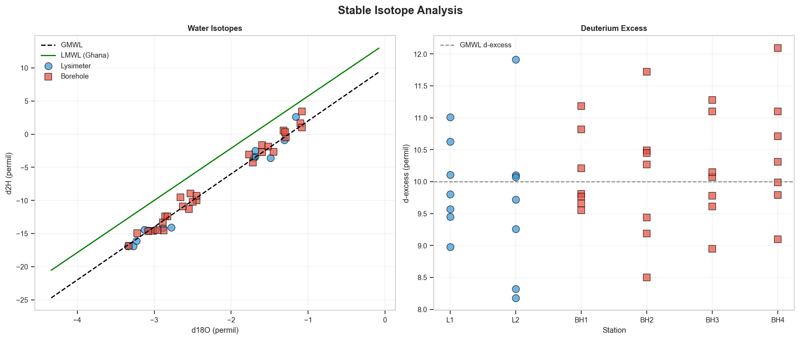
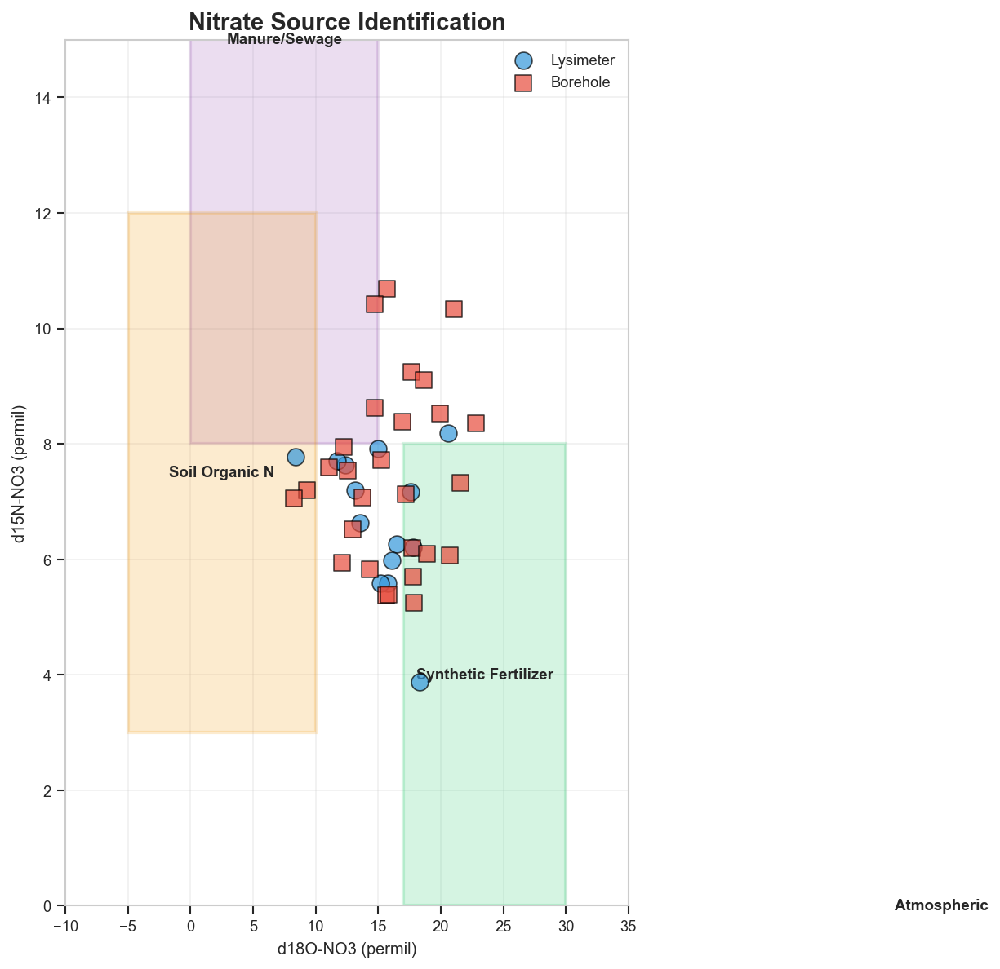
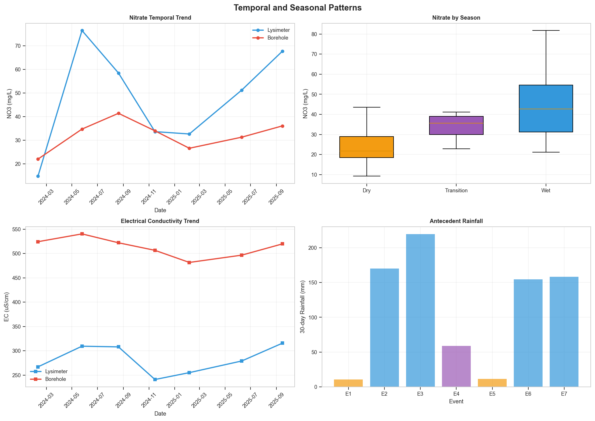
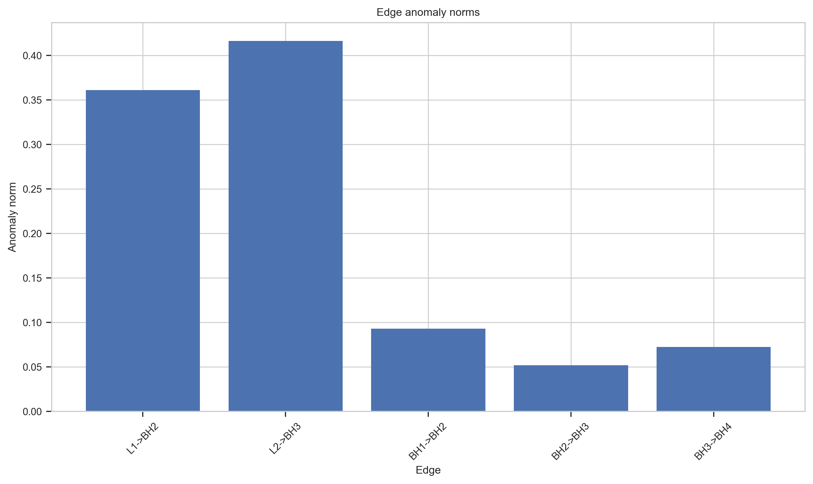
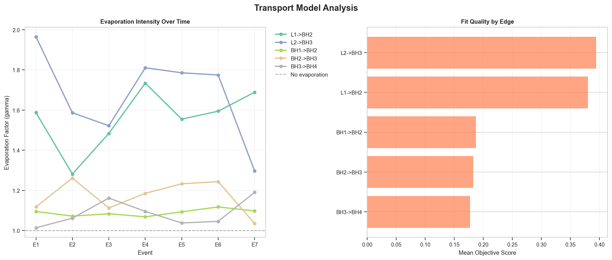
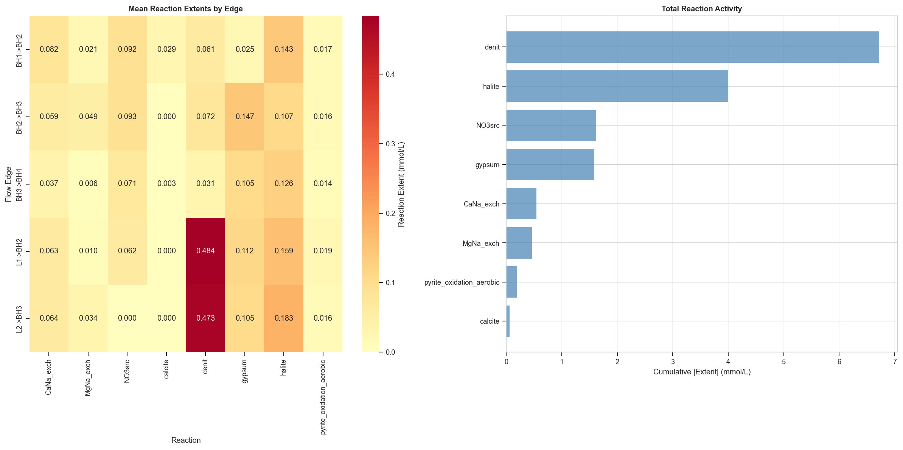

Comprehensive hydrochemical and isotopic analysis with reaction pathway modeling
Generated: 2026-02-03 04:21:35

Figure 1: Groundwater flow network showing lysimeters (blue circles) and boreholes (red squares)
| Station | Type | Cluster | Input Intensity | N Target (kg/ha) |
|---|---|---|---|---|
| L1 | lysimeter | CLUSTER_A | high | 250-300 |
| L2 | lysimeter | CLUSTER_B | moderate | 100-150 |
| BH1 | borehole | CLUSTER_A | high | 250-300 |
| BH2 | borehole | CLUSTER_A | high | 250-300 |
| BH3 | borehole | CLUSTER_B | moderate | 100-150 |
| BH4 | borehole | CLUSTER_B | moderate | 100-150 |
Using Hydrosheaf's advanced Isometric Log-Ratio (ILR) approach for water type classification.

Figure 2: ILR diagram showing hydrochemical facies classification with cation and anion fields

Figure 3: Gibbs diagram showing dominant hydrochemical processes
| Ion | Mean | Std | Min | Max | Median |
|---|---|---|---|---|---|
| Ca | 46.18 | 12.57 | 25.92 | 68.64 | 46.28 |
| Mg | 16.20 | 4.56 | 8.40 | 23.83 | 16.97 |
| Na | 23.21 | 7.90 | 9.79 | 36.86 | 24.87 |
| K | 5.88 | 1.02 | 3.78 | 7.82 | 5.98 |
| HCO3 | 222.55 | 57.91 | 123.72 | 307.94 | 228.06 |
| Cl | 32.21 | 9.29 | 17.23 | 48.19 | 32.37 |
| SO4 | 34.46 | 10.16 | 16.41 | 52.07 | 33.78 |
| NO3 | 37.50 | 16.36 | 9.26 | 81.73 | 35.86 |

Figure 4: Water isotopes relative to GMWL and local LMWL

Figure 5: Nitrate isotope source identification

Figure 6: Temporal trends in nitrate and EC with seasonal context
| Season | Mean NO3 (mg/L) | Std Dev | n |
|---|---|---|---|
| Dry | 24.1 | 9.6 | 12 |
| Transition | 33.9 | 7.0 | 6 |
| Wet | 45.1 | 16.3 | 24 |
Edge-based hydrochemical evolution modeling with transport and reaction pathway inference.

Figure 7: Anomaly norms by flow edge (lower = better fit)

Figure 8: Evaporation factors and model fit quality

Figure 9: Reaction pathway analysis
| Edge | Transport | Gamma | Objective | Key Reactions |
|---|---|---|---|---|
| L1 → BH2 | evap | 1.587 | 0.2110 | halite: +0.098 gypsum: +0.083 CaNa_exch: +0.063 |
| L2 → BH3 | evap | 1.965 | 0.1806 | denit: +0.142 halite: +0.097 CaNa_exch: +0.064 |
| BH1 → BH2 | evap | 1.095 | 0.2430 | NO3src: +0.044 calcite: +0.039 gypsum: +0.029 |
| BH2 → BH3 | evap | 1.118 | 0.1579 | halite: +0.169 MgNa_exch: +0.107 NO3src: +0.090 |
| BH3 → BH4 | evap | 1.014 | 0.1890 | halite: +0.176 gypsum: +0.128 NO3src: +0.036 |
| Edge | Transport | Gamma | Objective | Key Reactions |
|---|---|---|---|---|
| L1 → BH2 | evap | 1.282 | 0.5111 | denit: +0.608 halite: +0.373 gypsum: +0.119 |
| L2 → BH3 | evap | 1.587 | 0.5355 | denit: +1.028 halite: +0.175 gypsum: +0.114 |
| BH1 → BH2 | evap | 1.072 | 0.1824 | halite: +0.133 pyrite_oxidation_aerobic: +0.038 |
| BH2 → BH3 | evap | 1.261 | 0.1879 | NO3src: +0.182 CaNa_exch: +0.137 denit: +0.132 |
| BH3 → BH4 | evap | 1.062 | 0.2224 | halite: +0.264 NO3src: +0.059 |
| Edge | Transport | Gamma | Objective | Key Reactions |
|---|---|---|---|---|
| L1 → BH2 | evap | 1.484 | 0.4384 | denit: +0.426 gypsum: +0.157 halite: +0.127 |
| L2 → BH3 | evap | 1.522 | 0.3255 | denit: +0.466 gypsum: +0.093 halite: +0.078 |
| BH1 → BH2 | evap | 1.084 | 0.1595 | halite: +0.262 NO3src: +0.093 CaNa_exch: +0.063 |
| BH2 → BH3 | evap | 1.112 | 0.1761 | NO3src: +0.110 halite: +0.060 |
| BH3 → BH4 | evap | 1.162 | 0.1617 | gypsum: +0.040 denit: +0.012 |
| Edge | Transport | Gamma | Objective | Key Reactions |
|---|---|---|---|---|
| L1 → BH2 | evap | 1.734 | 0.3706 | denit: +0.180 pyrite_oxidation_aerobic: +0.031 halite: +0.015 |
| L2 → BH3 | evap | 1.811 | 0.3059 | denit: +0.258 halite: +0.132 MgNa_exch: +0.038 |
| BH1 → BH2 | evap | 1.069 | 0.1644 | NO3src: +0.136 CaNa_exch: +0.102 gypsum: +0.021 |
| BH2 → BH3 | evap | 1.186 | 0.1903 | halite: +0.220 MgNa_exch: +0.054 |
| BH3 → BH4 | evap | 1.096 | 0.1614 | gypsum: +0.077 denit: +0.016 |
| Edge | Transport | Gamma | Objective | Key Reactions |
|---|---|---|---|---|
| L1 → BH2 | evap | 1.555 | 0.2623 | halite: +0.278 gypsum: +0.087 denit: +0.023 |
| L2 → BH3 | evap | 1.786 | 0.3992 | denit: +0.470 halite: +0.315 |
| BH1 → BH2 | evap | 1.093 | 0.1648 | halite: +0.156 NO3src: +0.032 pyrite_oxidation_aerobic: +0.018 |
| BH2 → BH3 | evap | 1.233 | 0.1750 | NO3src: +0.114 denit: +0.073 MgNa_exch: +0.032 |
| BH3 → BH4 | evap | 1.038 | 0.1697 | gypsum: +0.156 NO3src: +0.112 halite: +0.025 |
| Edge | Transport | Gamma | Objective | Key Reactions |
|---|---|---|---|---|
| L1 → BH2 | evap | 1.595 | 0.4609 | denit: +0.668 halite: +0.157 |
| L2 → BH3 | evap | 1.775 | 0.4479 | denit: +0.530 halite: +0.170 |
| BH1 → BH2 | evap | 1.118 | 0.2306 | NO3src: +0.176 denit: +0.096 MgNa_exch: +0.010 |
| BH2 → BH3 | evap | 1.244 | 0.1907 | denit: +0.076 NO3src: +0.067 MgNa_exch: +0.048 |
| BH3 → BH4 | evap | 1.046 | 0.1627 | gypsum: +0.123 NO3src: +0.061 CaNa_exch: +0.042 |
| Edge | Transport | Gamma | Objective | Key Reactions |
|---|---|---|---|---|
| L1 → BH2 | evap | 1.689 | 0.4049 | denit: +0.997 halite: +0.064 |
| L2 → BH3 | evap | 1.296 | 0.5662 | denit: +0.419 halite: +0.311 gypsum: +0.179 |
| BH1 → BH2 | evap | 1.098 | 0.1650 | NO3src: +0.073 denit: +0.026 MgNa_exch: +0.019 |
| BH2 → BH3 | evap | 1.035 | 0.2020 | gypsum: +0.147 NO3src: +0.085 halite: +0.044 |
| BH3 → BH4 | evap | 1.190 | 0.1732 | NO3src: +0.087 denit: +0.064 pyrite_oxidation_aerobic: +0.022 |
Report generated using Hydrosheaf Groundwater Analysis Package v0.1.0
Analysis Date: 2026-02-03
All plots and data exported to the analysis_results directory